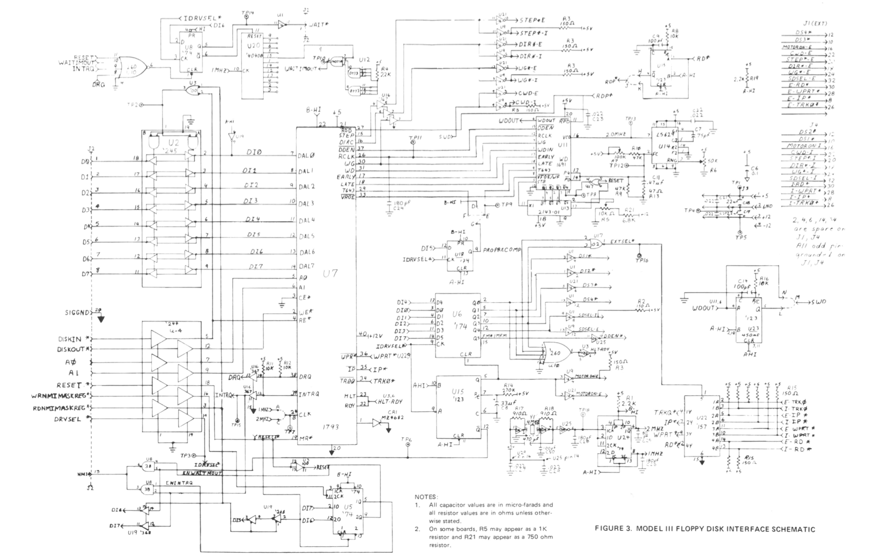
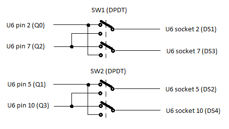

Note: The solution documented here is just an idea at the moment. I haven't actually implemented it.
Sometimes it would be handy to allow the Model III floppy disk interface to treat the internal drives as 2+3 and the external drives as 0+1, i.e. to swap them by flicking a switch. This would be useful for booting off an external SD-based floppy emulator or 3.5" drive.
Referring to page 53 of the Model III Technical Reference Manual, I propose the easiest way would be to intercept the Q0-Q3 outputs from chip U6 (74LS174) and redirect them through a couple of DPDT switches as shown in the image below. Only SW1 is needed if you only want to swap 0 with 2 for booting. Alternatively one 4PDT switch could be used to combine SW1 and SW2. I haven’t had a close look at the PCB, but maybe this could be achieved by carefully snipping the relevant chip pins near their PCB pads, bending the pins upwards and soldering the switch wires to the pins and pads.
Theory of operation: Many of the signals transmitted by the interface to the J1 (external) and J4 (internal) edge connectors are actually the same, i.e. MOTORON, CWD, STEP*, DIR*, WG*, and SDSEL. However the DS1*, DS2*, DS3*, and DS4* signals are different and are used to select the appropriate drive. These select signals can be obtained from the Q0-Q3 outputs of U6, and this is what the switch hack effectively swaps. The Q2-Q3 outputs also flow into U17 which generates the EXTSEL* signal used by U22 to select the correct signals RD*, WPRT*, IP*, and TRK0* received by the interface from the floppy.